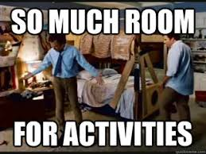

Three Months
I've been off work for about three months now. It's a good occasion to take stock of how that's going. In a word, it's been great.

-
I'm surprised how much lighter my mood is. It feels like a weight that I've been carrying around for some time is no longer there. It's different than being on vacation, better actually. I didn't appreciate how stressful tech management has been all these years.
-
I'm taking a ton of pleasure in simple things. I go grocery shopping almost every day, I'm doing a ton of cooking.
-
It feels good to get healthier. I had knee surgery and am recovering from that just fine. I exercise nearly every day. On days that I don't go to the gym I do thirty minutes on the bike.
-
It's great to have flexibility. I hadn't planned to see my Dad on his 80th birthday because we'd on a bigger group thing later. But on a whim I drove down and took him out for breakfast on his actual birthday, because why not.
-
If I didn't want to do it before, I still don't want to do it. The closet hasn't gotten cleaned out; neither has the garage.
My friend Rachel Grey has a three month head start on me leaving Google. Her writing this resonates with me. Especially this from a recent LinkedIn post: "I heard on the retired-Googlers mailing list that one month off per year of service is a good rule of thumb; after six of them, I'm still feeling like a sailor who just barely managed to swim to shore." Maybe that's still where I'm at too.
So what have I been doing? I'm prioritizing friends and family — I'm lucky to have a lot of people I care about. I'm embarrassed that I haven't always been good about staying in touch, but I can fix that now. And fun stuff like bridge lessons.
Beyond that, I'm getting involved with a couple of small projects but nothing serious yet. When I find something interesting, I'll write about it here.
Comments
Comments powered by Disqus